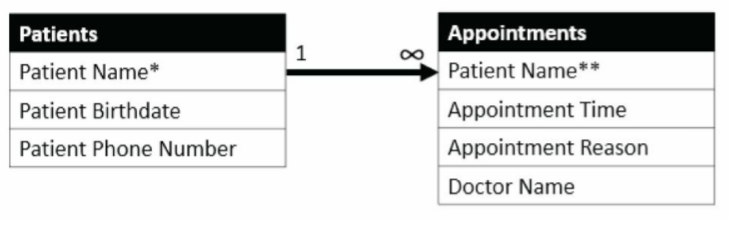
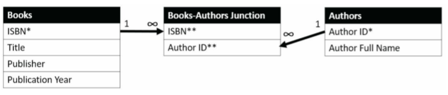
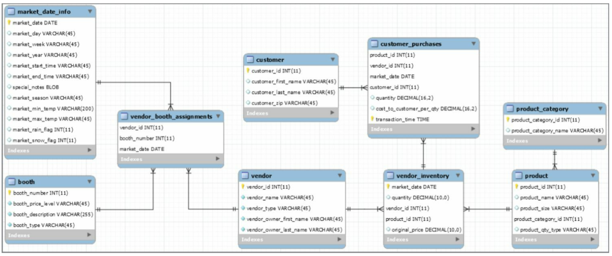

Chapter 1 Data Sources
1.1 Chapter Notes
The chapter introduces the basics of relational databases. The concepts include:
- One-to-many relationships between tables. E.g. for a doctor’s office database a patient will appear once in the Patients table but may appear many times in the Appointments table
- Entity-Relationship Diagrams (ERDs). E.g.

- Primary Keys - a column or collection of columns that serves to uniquely identify each row in a table.
- Foreign Key - when a table’s primary key is referenced in another table. E.g. when Patient ID appears in the Appointments table.
- Many-to-many relationships. E.g. between a Books table and an Authors table.
- A junction or associative table - these are used to match up primary keys for many-to-many relationships to reduce the amount of redundant data stored. Here’s a diagram to explain:

Here a single asterisk picks out the primary key, a double asterisk means that column is a foreign key. A book with multiple authors will have multiple rows in the junction table, instead of multiple rows in the books table where a lot more data would have to be repeated.
- Database normalisation - structuring a database so as to minimise redundant data storage.
- Dimensional model - a way of structuring a database into fact and dimension tables. The chapter explains:
So, for example, a transactional record of an item purchased at a retail store is a fact, containing the timestamp of the purchase, the store number, order number, customer number, and the amount paid. The store the purchase was made at is a dimension of the item purchase fact, and the associated store dimension table would contain additional information about the store, such as its name. You could then query both the fact and the dimension tables to get a summary of purchases by store.
The chapter then has a nice section about some of the questions you may want to ask when first being introduced to a data source, before going on to describe the Farmer’s Market database that will be used over the rest of the book. Here’s the ERD:

1.2 Exercises
Ex. 1
Question
What do you think will happen in the described Books and Authors database depicted in Figure 1.5 if an author changes their name? Which records might be added or updated, and what might be the effect on the results of future queries based on this data?
Answer
If we wanted to completely overwrite the author’s previous name, nothing in the Books table would need to change. The Author ID wouldn’t need to change, and so nothing in the junction table would need to change. Only the entry for Author Full Name in the Authors table would need to be altered. In this case database normalisation has made updating the author name straightforward.
However I believe the question is getting at the case where an author writes a book under one name, and then changes their name before releasing a new book. We want to keep both names in this database, each associated with the respective books. This could be accomplished by adding a new Author ID and a new row in the Authors table. However this could mislead us for some future queries - e.g. if we wanted to ask the average number of books written by each author, our query might count this as two authors with (say) one book each instead of the same author with two books. We can’t have the same Author ID attached to each of the two names - Author ID is our primary key. Perhaps there is some other way to represent in our database that these two names refer to the same person.
Ex. 2
Question
Think of something in your life that you could track using a database. What entities in this database might have one-to-many relationships with one another? Many-to-many?
Answer
If I were so inclined, I could keep track of data about my walks and turn this into a database. E.g. what species of birds I see - I think this would be a many-to-many relationship, on each walk I see multiple species of birds and I might see each species on multiple walks. An example of one-to-many might be weather. I.e. it might be rainy on multiple different walks but each walk will only have one type of weather. Although that last part probably does not reflect the reality of being outside in Scotland.